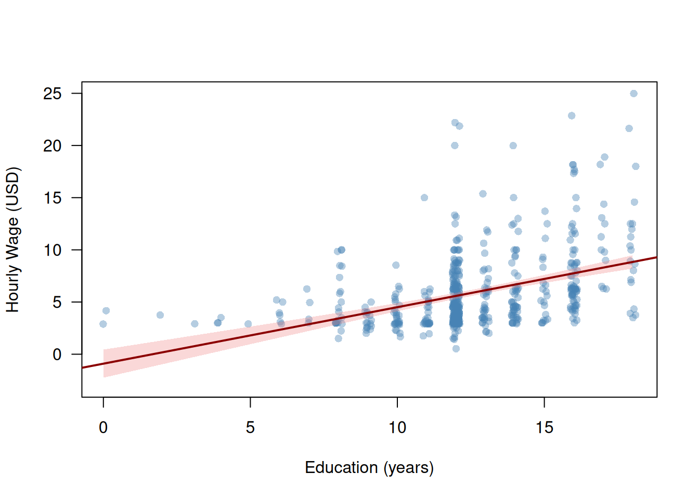
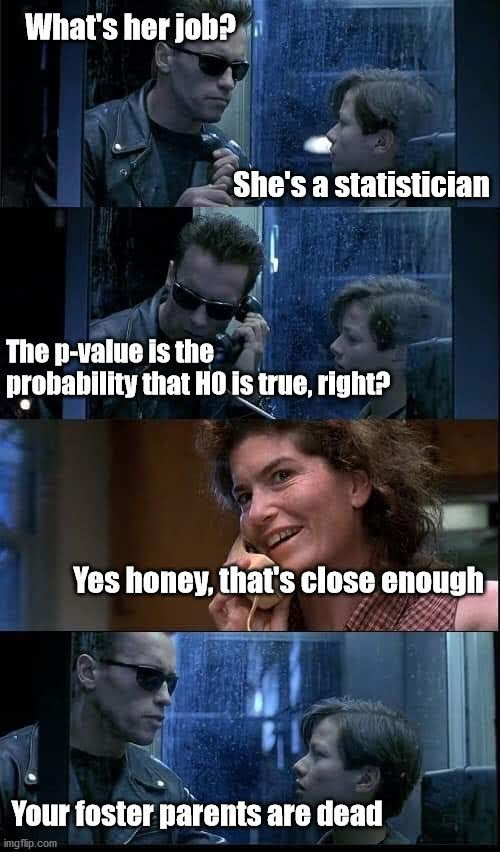

How much does one additional year of schooling increase a worker’s hourly earnings? We observe that workers with more schooling tend to earn more. But how large is this association? How precisely can we estimate it? And can we say that education causes higher wages?
To answer these questions we use the wage1 dataset from the wooldridge R package, which contains data on \(n=526\) workers drawn from the 1976 Current Population Survey. Table 3.1 summarizes the key variables.
library("wooldridge")library("kableExtra")data("wage1")vars<-c("wage", "educ", "exper", "tenure", "female")desc_tab<-data.frame( Variable =vars, Description =c("Hourly wage (USD)","Years of education","Years of work experience","Years with current employer","= 1 if female, 0 if male"), Mean =round(sapply(vars, \(v)mean(wage1[[v]])), 2), SD =round(sapply(vars, \(v)sd(wage1[[v]])), 2), Min =round(sapply(vars, \(v)min(wage1[[v]])), 2), Max =round(sapply(vars, \(v)max(wage1[[v]])), 2), row.names =NULL)kbl(desc_tab, col.names =c("Variable", "Description", "Mean", "SD", "Min", "Max"), align =c("l", "l", "r", "r", "r", "r"))|>kable_styling(bootstrap_options =c("striped", "hover"))
Table 3.1: Key variables in the wage1 dataset (\(n = 526\) workers, 1976 Current Population Survey).
Variable
Description
Mean
SD
Min
Max
wage
Hourly wage (USD)
5.90
3.69
0.53
24.98
educ
Years of education
12.56
2.77
0.00
18.00
exper
Years of work experience
17.02
13.57
1.00
51.00
tenure
Years with current employer
5.10
7.22
0.00
44.00
female
= 1 if female, 0 if male
0.48
0.50
0.00
1.00
The scatter plot below shows hourly wages (wage) against years of education (educ) for all \(n=526\) workers. Because education is measured in integer years, we add a small horizontal jitter to avoid overplotting. The plotted line is a preview of what this chapter builds up to: the fitted simple linear regression of wages on education.

Figure 3.1: Hourly wages and years of education for \(n=526\) workers. The line is the fitted simple linear regression; the shaded band is a 95% confidence interval for the regression line.
R Code: Scatter Plot of Wages and Education with Fitted Line
lm_simple<-lm(wage~educ, data =wage1)x_seq<-seq(min(wage1$educ), max(wage1$educ), length.out =200)ci<-predict(lm_simple, newdata =data.frame(educ =x_seq), interval ="confidence")plot(jitter(wage1$educ, factor =0.6), wage1$wage, xlab ="Education (years)", ylab ="Hourly Wage (USD)", pch =16, col =adjustcolor("steelblue", alpha.f =0.4), las =1, ylim =range(wage1$wage, -3))polygon(c(x_seq, rev(x_seq)),c(ci[, "lwr"], rev(ci[, "upr"])), col =adjustcolor("lightcoral", alpha.f =0.3), border =NA)abline(lm_simple, col ="darkred", lwd =2)
Two features of Figure 3.1 will guide the entire chapter.
First, the positive slope says wages rise with education on average. But by how much exactly, and how sure are we?
Second, the wide vertical spread of points around the line shows that education alone explains only part of the variation in wages: workers with the same years of schooling earn very different amounts. What else matters — experience, tenure, gender?
Guiding Questions
Estimation: By how much does an additional year of education increase wages, on average?
Inference: Is this association statistically reliable, or could it reflect chance variation in our sample of \(n=526\) workers?
Prediction: How well can we predict a worker’s wage?
We also address a fourth, harder question in Section 5.4: does education cause higher wages, or do we merely observe an association?
This chapter develops the statistical tools to answer these questions. We begin with the simple linear regression model (wages regressed on education alone) and then extend to the multiple linear regression model, which lets us control for further variables such as experience, tenure, and gender simultaneously.
3.2 Simple Linear Regression
We begin with the simplest version of the linear regression model: a single predictor \(X_i\) explaining variation in an outcome \(Y_i\). In the wages example, \(Y_i\) is the hourly wage and \(X_i\) is the years of education of worker \(i\).
3.2.1 The Model
The simple linear regression model is given by
\[
Y_i = \beta_1 + \beta_2 X_i + \varepsilon_i, \quad i = 1, \dots, n,
\qquad(3.1)\]
where:
\(Y_i\) is the outcome (or dependent) variable (hourly wage of worker \(i\))
\(X_i\) is the predictor (or independent) variable (years of education of worker \(i\))
\(\beta_1\) is the intercept — the expected wage when \(X_i = 0\)
\(\beta_2\) is the slope — the expected change in wages for one additional year of education
\(\varepsilon_i\) is the “error” term — capturing all other determinants of wages beyond education (ability, family background, occupation, parents, …)
Crucial Assumption on \(\varepsilon_i\): Exogeneity
\[
E(\varepsilon_i \mid X_1, \dots, X_n) = 0, \quad i = 1, \dots, n
\]
That is, the mean of the error \(\varepsilon_i\) of worker \(i\) is zero regardless of the education levels \(X_1, \dots, X_n\) of all workers in the sample — including worker \(i\)’s own education \(X_i\). This is called strict exogeneity. In particular, it implies that the mean of \(\varepsilon_i\) is zero regardless of the value of \(X_i\), \[
E(\varepsilon_i \mid X_i = x) = 0, \quad i = 1, \dots, n,
\] for all possible values of \(x.\) One often says: ::: {.center} “\(\varepsilon_i\) must be mean independent of \(X_i.\)”
In words, exogeneity requires: conditional on education \(X_i=x,\) no other factor that drives wages \(Y_i\) may be correlated with education \(X_i.\) This is not obvious from the conditional-mean statement above — but it can be shown to follow from it.
Problem: We can never prove that exogeneity holds. We can only argue for its plausibility, using expert knowledge of the specific data problem. :::
The simple linear regression modelEquation 3.1 specifies the conditional mean of \(Y_i\) given \(X_i=x\) as a linear function \[\begin{align*}
m(x)
& = E(Y_i \mid X_i = x) \\[2ex]
& = E(\beta_1 + \beta_2 X_i + \varepsilon_i \mid X_i = x) \\[2ex]
& = E(\beta_1 + \beta_2 X_i\mid X_i = x) + \underbrace{E(\varepsilon_i \mid X_i = x)}_{=0} \\[2ex]
& = \beta_1 + \beta_2 x
\end{align*}\]
The slope \(\beta_2\) equals the partial derivative of the conditional mean function \(m(x)=E(Y_i\mid X_i=x)\) with respect to \(X_i=x\):
In words: a one-unit increase in \(X_i\) changes the expected value of \(Y_i\) by \(\beta_2\) units. In the wages example, \(\beta_2\) measures the expected wage premium per additional year of schooling, in dollars per hour.
The model specifies the conditional mean of wages as linear in education. It does not say every worker with the same education earns the same wage. The error term \(\varepsilon_i\) captures the deviation of worker \(i\)’s actual wage from the conditional mean function \(E(Y_i \mid X_i=x)=m(x).\)
3.2.2 OLS Estimation
The parameters \(\beta_1\) and \(\beta_2\) are unknown. The Ordinary Least Squares (OLS) estimator chooses \(\widehat\beta_1\) and \(\widehat\beta_2\) to minimize the sum of squared deviations of the observations \(Y_i\) from the line \(b_1 + b_2 X_i\):
Take partial derivatives of the sum of squares in Equation 3.2 with respect to \(b_1\) and \(b_2,\) and set them to zero. Solving yields the closed-form OLS estimators:
The fitted value\(\widehat Y_i\colon\)\[
\widehat Y_i = \widehat{m}(X_i) = \widehat\beta_1 + \widehat\beta_2 X_i
\] is the model’s prediction of the wage of worker \(i\).
The residual\(\widehat{\varepsilon}_i\colon\)\[
\widehat{\varepsilon}_i = Y_i - \widehat Y_i
\] is the prediction error.
Interpretation of the Estimated Parameters:
The estimated slope parameter \[\begin{align*}
\widehat\beta_2
&=\frac{\partial}{\partial x}\widehat{E}(Y_i|X_i=x)\\[2ex]
&=\frac{\partial}{\partial x}\widehat{m}(Y_i|X_i=x)\\[2ex]
&=\frac{\partial}{\partial x}\big(\widehat{\beta}_1 + \widehat{\beta}_2 x\big)
=\widehat{\beta}_2 = 0.54
\end{align*}\] means that on average each additional year of education is associated with an increase of approximately 0.54 dollars per hour in wages.
The estimated intercept parameter \[\begin{align*}
\widehat\beta_1
&=\widehat{E}(Y_i|X_i=0)\\[2ex]
&=\widehat{m}(Y_i|X_i=0)\\[2ex]
&=\big(\widehat{\beta}_1 + \widehat{\beta}_2 0\big)
=\widehat{\beta}_1 = -0.9
\end{align*}\] is the predicted wage for a worker with zero years of education.
When Is This Interpretation Justified?
The interpretation above treats \(\widehat\beta_2\) as a reliable estimate of the true slope \(\beta_2\) of the conditional mean function \(m(x) = E(Y_i \mid X_i = x)\).
This is justified only if Assumptions 1–3 in Section 3.2.3 are fulfilled. Under these assumptions, the OLS estimators are unbiased (Section 3.2.4).
If these assumptions are violated, for instance,
because an omitted variable such as ability drives both education and wages (violates strict exogeneity, Assumption 2), or
because the linear model is misspecified (violates the model Assumption 1),
then \(\widehat\beta_2\) systematically over- or understates the true unknown \(\beta_2,\) and the interpretation can be misleading.
The next paragraph shows that there is indeed reason for doubt here.
\(\widehat\beta_1 + \widehat\beta_2 x = -0.90 + 0.54 \cdot x\)
❗Note that the predicted values are outside the observed wages \(Y_i\) for education values \(X_i=\)educ\(_i \leq 0.\)
This means that our simple linear regression model is misspecified.
A well specified model has its regression line in the center of the data cloud for all values of \(X_i.\)
Below, we will improve the model specification using a log-transformation \(\log(Y_i)\); see Section 5.1.1.
3.2.3 Assumptions
The OLS estimators \(\widehat\beta_1\) and \(\widehat\beta_2\) have desirable statistical properties under four assumptions.
Assumption 1: Linear Model and Random Sampling
The data \((Y_1, X_1), \dots, (Y_n, X_n)\) are a realization of an (i.i.d.) random sample from the simple linear regression model in Equation 3.1\[
Y_i = \beta_1 + \beta_2 X_i + \varepsilon_i, \quad i = 1, \dots, n.
\] Random sampling means the \(n\) observations are drawn independently from the same (identical) population distribution (i.i.d.).
Assumption 2: Strict Exogeneity
\[
E(\varepsilon_i \mid X) = 0, \quad i = 1, \dots, n,
\qquad\text{where } X = (X_1, \dots, X_n).
\]
This is the crucial assumption introduced together with the model in Section 3.2.1. The shorthand \(X\) for the predictor values of the whole sample is also used below, for instance in \(\operatorname{Var}(\widehat\beta_2 \mid X)\).
Why Condition on All of \(X_1, \dots, X_n\)?
The OLS estimator \(\widehat\beta_2\) in Equation 3.3 depends on the education levels of all\(n\) workers. To show that it is unbiased, we therefore need the errors to have mean zero given all of them — not only given worker \(i\)’s own \(X_i\).
Under random sampling (Assumption 1), worker \(i\)’s data \((Y_i, X_i)\) are independent of the other workers’ education levels, so that \[
E(\varepsilon_i \mid X_1, \dots, X_n) = E(\varepsilon_i \mid X_i).
\] For random samples, strict exogeneity thus reduces to weak exogeneity \[
E(\varepsilon_i \mid X_i) = 0\quad\text{for all}\quad i=1,\dots,n.
\] Strict exogeneity becomes a genuinely stronger requirement with time series data, where, e.g., today’s shock \(\varepsilon_t\) can affect tomorrow’s predictor value \(X_{t+1}.\)
When Does Exogeneity Fail?
Exogeneity fails, for instance, when an omitted variable (a variable we missed including into the regression model), say \(W_i,\) is correlated with both
\(X_i\) the predictor variable and
\(Y_i\) the outcome variable.
For instance, let \(W_i\) denote worker \(i\)’s ability. This is hardly measurable, so it is usually not included as a predictor in the regression model. But ability \(W_i\) typically does explain part of the wage \(Y_i\) — so it ends up in the error term \(\varepsilon_i.\)
If higher-ability workers (large \(W_i\)) tend to acquire more education (large \(X_i\)) and vice-versa, i.e. \[
\operatorname{Cov}(W_i,X_i)>0,
\]and if higher-ability workers (large \(W_i\)) tend to have higher wages (large \(Y_i\)) and vice-versa, i.e. \[
\operatorname{Cov}(W_i, Y_i)>0,
\] then \(X_i\) is not exogenous and, equivalently, \(\varepsilon_i\) is not mean-independent of \(X_i\), \[
E(\varepsilon_i \mid X_i) \neq 0.
\] This is the omitted variable problem, revisited in Section 4.1.1. In such a situation, we cannot trust our estimates.
The predictor variables \(X_i\) must have positive variance. If all workers had identical education levels, the denominator in Equation 3.3 would be zero and the estimator \[
\widehat\beta_2 = \frac{\widehat{\operatorname{Cov}}(X,\,Y)}{\widehat{\operatorname{Var}}(X)}
\] of \(\beta_2\) could not be computed.
The variance of the error is constant across all values of \(X_i\).
Heteroskedasticity
The scatter plot Figure 3.1 suggests Assumption 4 of homoskedastic errors may be violated: the spread of wages around the regression line appears wider for more-educated workers.
More variation in \(X\) (larger denominator) \(\Rightarrow\) smaller variance \(\Rightarrow\) more precise estimate.
Larger error variance \(\sigma^2\)\(\Rightarrow\) larger variance \(\Rightarrow\) less precise estimate.
Larger sample size \(n\)\(\Rightarrow\) larger denominator \(\Rightarrow\) more precise estimate.
Since \(\sigma^2=\operatorname{Var}(\varepsilon_i)\) is unknown, we replace it in Equation 3.5 by \[
\widehat\sigma^2 = \frac{1}{n-2}\sum_{i=1}^n\widehat\varepsilon_i^2.
\qquad(3.6)\] The denominator is \(n-2\) rather than \(n\) because two parameters (\(\widehat\beta_1\), \(\widehat\beta_2\)) have already been estimated from the data. This degrees-of-freedom adjustment makes \(\widehat\sigma^2\) an unbiased estimator of \(\sigma^2\): \(E(\widehat\sigma^2)=\sigma^2.\)
Plugging \(\widehat\sigma^2\) into Equation 3.5 yields the estimated variance of \(\widehat\beta_2\): \[
\widehat{\operatorname{Var}}(\widehat\beta_2\mid X)
= \frac{\widehat\sigma^2}{\displaystyle\sum_{i=1}^{n}(X_i - \bar X)^2}.
\] Taking the square root yields the estimated standard error: \[
\widehat{\operatorname{SE}}(\widehat\beta_2\mid X)
= \sqrt{\widehat{\operatorname{Var}}(\widehat\beta_2\mid X)}
= \frac{\widehat\sigma}{\sqrt{\displaystyle\sum_{i=1}^{n}(X_i - \bar X)^2}}.
\qquad(3.7)\]
We can verify this against the standard error reported by summary():
Under Assumptions 1–4, the OLS estimators \(\widehat{\beta}_2\) and \(\widehat{\beta}_1\) in Equation 3.3 and Equation 3.4 are the Best Linear Unbiased Estimators (BLUE). That is, among all unbiased estimators of \(\beta_1\) and \(\beta_2\) that are linear in \(Y_1, \dots, Y_n,\) the OLS estimators \(\widehat\beta_1\) and \(\widehat\beta_2\) have the smallest variance.
3.2.5 Statistical Inference: \(t\)-Test for \(\beta_2\)
Based on the observed wage data, we computed the estimate \[
\widehat\beta_2 = 0.54.
\] The true value of \(\beta_2\) is unknown; all we have is this estimate. And the estimate is uncertain: had we observed a different sample of \(n = 526\) workers, we would have obtained a different estimate — the sampling variability discussed in Section 2.1.
Statistical inference quantifies this uncertainty and tells us which conclusions about the unknown \(\beta_2\) are supported by the data.
How Much Would the Estimate Vary Across Samples?
We cannot easily draw new samples of workers to visualize the variability of the estimates. But we can easily simulate 🪄 new samples under a naive, very likely wrong setup, just to get a rough idea about the sampling variability. So, let’s treat the estimated model \[
\widehat{m}(x) = \widehat\beta_1 + \widehat\beta_2 \cdot x
\] as if it were the true model. And let’s assume the error term \(\varepsilon_i\) is normally distributed, with variance \(\widehat\sigma^2\) — the estimated variance.
Using this naive, very likely wrong data-generating process (see Section 2.7), we generate many artificial wage data sets and re-estimate \(\beta_2\) on each one. This gives us a rough idea of how much \(\widehat{\beta}_2\) varies across resamplings.
To see what the estimation results for \(\beta_2\) would look like if education had no effect on wages, we repeat the simulation with \(\beta_2 = 0;\) i.e., we repeat it under the null hypothesis \[
H_0\colon \beta_2 = 0.
\]
Figure 3.2: Estimates of \(\beta_2\) from 1000 simulated wage data sets. Left: the true slope equals the estimate from our data. Right: the true slope is zero (dashed grey line). The dark red line marks the estimate from our observed data.
R Code: Simulating the Estimates \(\widehat{\beta}_2\) of \(\beta_2\) (Figure 3.2)
set.seed(123)n_sim<-1000n<-nrow(wage1)beta1_hat<-coef(lm_simple)[1]beta2_hat<-coef(lm_simple)[2]sigma_hat<-sqrt(sum(residuals(lm_simple)^2)/(n-2))## Simulate new wages and re-estimate beta_2 (education values kept fixed)## assuming true beta_2 = 0.54beta2_hat_sim<-numeric(n_sim)for(kin1:n_sim){model_sim<-beta1_hat+beta2_hat*wage1$educerror_sim<-rnorm(n, sd =sigma_hat)## Simulate outcome values under beta_2 = 0.54Y_wage_sim<-model_sim+error_sim## Save estimates for beta_2beta2_hat_sim[k]<-coef(lm(Y_wage_sim~wage1$educ))[2]}## Simulate new wages and re-estimate beta_2 (education values kept fixed)## under H0: beta_2 = 0 beta2_hat_H0_sim<-numeric(n_sim)for(kin1:n_sim){model_H0_sim<-beta1_hat+0*wage1$educerror_sim<-rnorm(n, sd =sigma_hat)## Simulate outcome values under beta_2 = 0Y_wage_H0_sim<-model_H0_sim+error_sim## Save estimates for beta_2beta2_hat_H0_sim[k]<-coef(lm(Y_wage_H0_sim~wage1$educ))[2]}## Plotting bins<-seq(-0.3, 0.8, by =0.02)# same bins and axis in both panelsx_lim<-c(-0.2, 0.75)par(mfrow =c(1, 2))hist(beta2_hat_sim, breaks =bins, col ="steelblue", border ="white", las =1, xlim =x_lim, ylim =c(0, 160), main =expression("Assuming "*beta[2]==0.54), xlab =expression("Simulated estimates of "*beta[2]))abline(v =beta2_hat, col ="darkred", lwd =2)hist(beta2_hat_H0_sim, breaks =bins, col ="steelblue", border ="white", las =1, xlim =x_lim, ylim =c(0, 160), main =expression("Assuming "*beta[2]==0), xlab =expression("Simulated estimates of "*beta[2]))abline(v =0, col ="grey40", lwd =2, lty =2)abline(v =beta2_hat, col ="darkred", lwd =2)par(mfrow =c(1, 1))
The left panel of Figure 3.2 shows that the estimates vary around the assumed-to-be-true value \(\beta_2 = 0.54.\)
The right panel of Figure 3.2 shows the estimates in the hypothetical scenario in which we assume that \(\beta_2 = 0\): they vary around zero.
In empirical work, we often want to check whether some variable (e.g., education) has an effect on the outcome (e.g., wages) at all. To check such a no-effect hypothesis, we formulate the null hypothesis \[
H_0\colon \beta_2 = 0
\] and then try to prove it wrong. That is, we try to reject \(H_0,\) based on the evidence in the data.
The right panel of Figure 3.2 shows that, under the hypothetical no-effect scenario \[
H_0\colon \beta_2 = 0,
\] none of the simulated estimates of \(\beta_2\) comes even close to the estimate \(\widehat\beta_2 = 0.54\) that we computed from the actually observed data (dark red line).
Our estimate \(\widehat\beta_2 = 0.54\) thus seems incompatible with the no-effect scenario \[
H_0\colon \beta_2 = 0.
\]
However, this argument is merely based on a naive simulation. Statistical hypothesis tests, such as the \(t\)-test, let us make exactly this argument in a scientifically clean and rigorous way.
The \(t\)-Test
We test the null hypothesis\(H_0\) against the two-sided alternative hypothesis\(H_1\), \[\begin{align*}
&H_0\colon \beta_2 = 0\quad\text{(education is unrelated to wages)}\\[2ex]
\text{vs.}\quad &H_1\colon \beta_2 \neq 0\quad\text{(education is related to wages)}
\end{align*}\] using the \(t\)-statistic
\[
T = \frac{\widehat\beta_2 - 0}{\widehat{\operatorname{SE}}(\widehat\beta_2 \mid X)}
\qquad(3.8)\]
The \(t\)-statistic measures how far the estimate lies from zero in units of standard errors. Like the estimator \(\widehat\beta_2\), the \(t\)-statistic \(T\) is a random variable: its value changes from sample to sample.
We know the exact distribution of the random \(t\)-statistic \(T\) if
\(H_0\colon \beta_2 = 0\) is true (we say “under \(H_0\colon \beta_2 = 0\)”),
Assumptions 1–4 hold, and
the error terms \(\varepsilon_i\) are actually normally distributed, \(\varepsilon_i \mid X \sim \mathcal{N}(0, \sigma^2)\).
Under these conditions, we have that \[
T = \frac{\widehat\beta_2 - 0}{\widehat{\operatorname{SE}}(\widehat\beta_2 \mid X)} \overset{H_0}{\sim} t_{n-2}.
\qquad(3.9)\]
Notation: \(\overset{H_0}{\sim}\)
We write \(\overset{H_0}{\sim}\) (read: “is, under \(H_0\), distributed as”) instead of \(\sim\) as a reminder: Equation 3.9 holds only if
\(H_0\colon \beta_2 = 0\) is true
Assumptions 1–4 hold
errors \(\varepsilon_i\) are normally distributed.
For the observed value of \(T\) computed from our observed data, we write \(T_{\operatorname{obs}}.\) Here, \[\begin{align*}
T_{\operatorname{obs}}
&= \frac{\widehat{\beta}_{2,\operatorname{obs}} - 0}{\widehat{\operatorname{SE}}(\widehat\beta_2 \mid X)_{\operatorname{obs}}} \\[2ex]
&= \frac{0.541 - 0}{0.053} \\[2ex]
&= 10.2
\end{align*}\]
We can now compare the observed value \[
T_{\operatorname{obs}} = 10.2
\] with the null distribution \[
T \overset{H_0}{\sim} t_{n-2},
\] which tells us which values of \(T\) we should expect to see if \(H_0\colon \beta_2 = 0\) were true.
Is \(T_{\operatorname{obs}}\) compatible with \(H_0\), or is it incompatible with \(H_0\)?
Figure 3.3 shows the density of the null distribution together with \(T_{\operatorname{obs}}\) (dark red line).
Under \[
H_0\colon \beta_2 = 0,
\] the \(t\)-statistic typically takes values between about \(-2\) and \(2\).
Our observed value \[
T_{\operatorname{obs}} = 10.2,
\] however, lies far out in the right tail, where the density is practically zero.
That is, \(T_{\operatorname{obs}}\) is incompatible with \(H_0\). (The shaded areas in Figure 3.3 are explained below.)
Figure 3.3: Density of the null distribution \(t_{n-2}\) of the \(t\)-statistic \(T\) under \(H_0\colon \beta_2 = 0\). The shaded tails are the rejection regions of the two-sided \(t\)-test at significance level \(\alpha = 0.05\) (dashed grey lines: critical values). The dark red line marks the observed value \(T_{\operatorname{obs}}\).
R Code: Plotting the Null Distribution and \(T_{\operatorname{obs}}\) (Figure 3.3)
T_obs<-beta2_hat/SE_beta2df_t<-n-2t_crit<-qt(0.975, df =df_t)t_seq<-seq(-4, 11, length.out =1000)plot(t_seq, dt(t_seq, df =df_t), type ="l", lwd =2, las =1, xlab ="Values of T", ylab ="Density")## Rejection regions (two-sided, alpha = 0.05)t_left<-seq(-4, -t_crit, length.out =100)t_right<-seq(t_crit, 11, length.out =100)polygon(c(t_left, rev(t_left)), c(dt(t_left, df =df_t), rep(0, 100)), col =adjustcolor("lightcoral", alpha.f =0.6), border =NA)polygon(c(t_right, rev(t_right)), c(dt(t_right, df =df_t), rep(0, 100)), col =adjustcolor("lightcoral", alpha.f =0.6), border =NA)abline(v =c(-t_crit, t_crit), lty =2, col ="grey40")## Observed value of the t-statisticabline(v =T_obs, col ="darkred", lwd =2)text(T_obs, 0.35, expression(T[obs]), pos =2, col ="darkred")
But how far is far enough? When exactly is the observed estimate \(\widehat{\beta}_{2,\operatorname{obs}} = 0.541\) and its observed value of the \(t\)-statistic \(T_{\operatorname{obs}} = 10.2\) incompatible with \(H_0\colon\beta_2=0\)?
To answer this question, we use decision theory.
Based on the data, a test makes one of two decisions:
reject \(H_0\) or
fail to reject \(H_0.\)
Each of the two decisions can be right or wrong, depending on the unknown truth; see Table 3.2.
Table 3.2: Possible outcomes of a statistical test. Rows: our decision based on the data. Columns: the unknown truth.
\(H_0\) is true
\(H_0\) is not true
Fail to reject \(H_0\)
Correct decision
Type II error
Reject \(H_0\)
Type I error
Correct decision
In empirical work, we usually hope to reject \(H_0,\) since a rejection of \(H_0\) is what typically gets a scientific paper published. 📄✌️😎
Precisely because we want to reject \(H_0\), we must guard against rejecting it wrongly, i.e., against a Type I error. We therefore bound the probability of a Type I error from above by a small significance level\(\alpha\): \[
\underbrace{P(\text{reject $H_0$} \mid \text{$H_0$ is true})}_{\text{Probability of a Type I error}} \leq \alpha = \text{small value}.
\]
Commonly used significance levels are
\(\alpha = 0.05\)
\(\alpha = 0.01\)
\(\alpha = 0.001\)
We now need a decision rule for rejecting \(H_0\) such that the probability of a Type I error is bounded from above, for instance by \(\alpha=0.05,\)\[
\underbrace{P(\text{reject $H_0$} \mid \text{$H_0$ is true})}_{\text{Probability of a Type I error}} \leq \alpha = 0.05.
\]
Remember: Under \(H_0\), i.e., under the condition “\(\mid\)\(H_0\) is true”, we know from Equation 3.9 that \[
T = \frac{\widehat\beta_2 - 0}{\widehat{\operatorname{SE}}(\widehat\beta_2 \mid X)} \overset{H_0}{\sim} t_{n-2}.
\] Thus, we can use this knowledge about the null hypothetical distribution to design a decision rule, such that the probability of a Type I error is bounded from above by \(\alpha = 0.05.\)
The general idea is the following:
Assume \(H_0\colon \beta_2 =0\) were true.
Under \(H_0,\) we expect to see \((1-\alpha)\cdot 100 \% = 95\%\) of all realizations of \(T\overset{H_0}{\sim} t_{n-2}\) within the interval \[\begin{align*}
& \big[t_{n-2,\, \alpha/2},\; t_{n-2,\, 1-\alpha/2}\big]\\[2ex]
= & \big[t_{n-2,\, 0.025},\; t_{n-2,\, 0.975}\big] \\[2ex]
= & \big[-1.965,\; 1.965\big]\quad \text{(using $n=526$)},
\end{align*}\] where \(t_{n-2,\, p}\) denotes the \(p\)-quantile of the \(t\)-distribution with \(n-2\) degrees of freedom. In R: $t_{n-2,, p}= $ qt(p, df = n - 2).
Compare the actually observed \(T_{\operatorname{obs}}=10.2\) against this null hypothetical range. \[\begin{align*}
T_{\operatorname{obs}} \not\in & \big[t_{n-2,\, 0.025}, t_{n-2,\, 0.975}\big] \\[2ex]
10.2 \not\in & \big[-1.965, 1.965\big]\quad \text{(using $n=526$)}
\end{align*}\]
If \(T_{\operatorname{obs}}\) is inside of it, we fail to reject \(H_0\).
If \(T_{\operatorname{obs}}\) is outside of it, we reject \(H_0\).
Summary: Decision Rule
Fail to reject \(H_0\) (\(T_{\operatorname{obs}}\) is compatible with \(H_0\))
if \(t_{n-2,\, \alpha/2}\; \leq \;T_{\operatorname{obs}} \;\leq\; t_{n-2,\, 1-\alpha/2}.\)
Equivalently, if \(|T_{\operatorname{obs}}| \;\leq \; t_{n-2,\, 1-\alpha/2}.\)
Reject \(H_0\) (\(T_{\operatorname{obs}}\) is incompatible with \(H_0\))
Equivalently, if \(|T_{\operatorname{obs}}| > t_{n-2,\, 1-\alpha/2}.\)
Critical Value: The quantile \[
t_{n-2,\, 1-\alpha/2}
\] is called the critical value of the test.
Since the \(t\)-distribution is symmetric around zero, we have that \[
t_{n-2,\, \alpha/2} = -t_{n-2,\, 1-\alpha/2};
\] that is why the decision rule can be written with \[
|T_{\operatorname{obs}}|.
\]
Rejection Region: All values of \(T\) beyond the critical values, i.e., \[
|T| > t_{n-2,\, 1-\alpha/2},
\] form the rejection region: if \(T_{\operatorname{obs}}\) falls into it, we reject \(H_0\).
In Figure 3.3, the critical values are the dashed grey lines and the rejection region is shaded. For \(\alpha = 0.05\) and our sample size, the critical value is \[
t_{n-2,\, 0.975} = t_{524,\, 0.975} = 1.965,
\] computed with qt(0.975, df = n - 2). Since \[
|T_{\operatorname{obs}}| = 10.2 > 1.965,
\]\(T_{\operatorname{obs}}\) lies (clearly) in the rejection region, and we reject \(H_0\colon \beta_2 = 0\) at the significance level \(\alpha=0.05.\)
Try it: at which significance levels \(\alpha\) can we still reject \(H_0\colon\beta_2=0\)?
One can show that the decision rule \[
|T_{\operatorname{obs}}| > t_{n-2,\, 1-\alpha/2}
\] keeps the probability of a Type I error exactly at \(\alpha\): \[
\underbrace{P\bigl(|T| > t_{n-2,\, 1-\alpha/2} \mid \text{$H_0$ is true}\bigr)}_{\text{Probability of a Type I error}} = \alpha.
\]
Going Deeper: Proof that the Probability of a Type I Error Equals \(\alpha\)
Let \(F\) denote the distribution function of the \(t_{n-2}\)-distribution and write \(q = t_{n-2,\, 1-\alpha/2}\) for short. By Equation 3.9, \(T \overset{H_0}{\sim} t_{n-2}\), so all probabilities below are computed with \(F\).
Step 1: Split the event. The event \(|T| > q\) means that \(T > q\)or\(T < -q\). These two events cannot occur at the same time, so their probabilities add up: \[\begin{align*}
P\bigl(|T| > q \mid \text{$H_0$ is true}\bigr)
&= P(T > q \mid \text{$H_0$ is true}) \\
&\quad + P(T < -q \mid \text{$H_0$ is true}).
\end{align*}\]
Step 2: Express both parts with \(F\). Since the \(t\)-distribution is continuous, \(P(T = q) = 0\), and thus \[\begin{align*}
P(T > q \mid \text{$H_0$ is true}) & = 1 - F(q), \\[2ex]
P(T < -q \mid \text{$H_0$ is true}) & = F(-q).
\end{align*}\]
Step 3: Use the symmetry of the \(t\)-distribution. The density of the \(t\)-distribution is symmetric around zero (see Figure 3.3), so the area to the left of \(-q\) equals the area to the right of \(q\): \[
F(-q) = 1 - F(q).
\]
Step 4: Use the definition of the quantile.\(q = t_{n-2,\, 1-\alpha/2}\) is the \((1-\alpha/2)\)-quantile of the \(t_{n-2}\)-distribution, i.e., \(F(q) = 1 - \alpha/2\).
In words: each of the two shaded tails in Figure 3.3 has probability \(\alpha/2\), so together they have probability \(\alpha\). We can check this in R for \(\alpha = 0.05\) and our sample size:
Note: The proof relies on Equation 3.9 being exact, i.e., on normally distributed errors. Without normality, \(P(|T| > q \mid \text{$H_0$ is true})\) is only approximately equal to \(\alpha\) for largish \(n\) (e.g. \(n\geq 30\)).
The \(p\)-Value
The \(p\)-value is the probability, under \(H_0\), that the \(t\)-statistic \(T\) is at least as extreme — in absolute value — as the observed value \(|T_{\operatorname{obs}}|\):
The \(p\)-value gives an equivalent decision rule:
Fail to reject \(H_0\) (\(T_{\operatorname{obs}}\) is compatible with \(H_0\)) if \[
p_{\operatorname{obs}} \geq \alpha.
\]
Reject \(H_0\) (\(T_{\operatorname{obs}}\) is incompatible with \(H_0\)) if \[
p_{\operatorname{obs}} < \alpha,
\] where \(\alpha\) denotes the significance level such as \(\alpha = 0.05.\)
📢 The \(p\)-Value Is Not the Probability That the Null Hypothesis Is True!
The p-value is calculated assuming the null hypothesis is true. Therefore, it cannot be the probability of that same hypothesis being true.

The Terminator knows stats.
Testing Other Hypothesized Values
The \(t\)-test is not restricted to the no-effect hypothesis \(\beta_2 = 0\). To test whether \(\beta_2\) equals any other hypothesized value \(\beta_2^0\), \[\begin{align*}
&H_0\colon \beta_2 = \beta_2^0\\[2ex]
\text{vs.}\quad &H_1\colon \beta_2 \neq \beta_2^0,
\end{align*}\] we use the \(t\)-statistic \[
T = \frac{\widehat\beta_2 - \beta_2^0}{\widehat{\operatorname{SE}}(\widehat\beta_2 \mid X)} \overset{H_0}{\sim} t_{n-2}
\] together with the same decision rule as above.
Example: Suppose someone claims that one additional year of education raises hourly wages by \(50\) cents on average. To check this claim, we test \[\begin{align*}
&H_0\colon \beta_2 = 0.5\\[2ex]
\text{vs.}\quad &H_1\colon \beta_2 \neq 0.5.
\end{align*}\] The observed value of the \(t\)-statistic is \[
T_{\operatorname{obs}} = \frac{0.5414 - 0.5}{0.0532} = 0.78,
\] and the corresponding \(p\)-value is computed as follows. Let \(F\) denote the distribution function of the \(t_{n-2}\)-distribution, i.e., the distribution of \(T\) under \(H_0\). Then \[\begin{align*}
p_{\operatorname{obs}}
&= P_{H_0}\bigl(|T| \geq |T_{\operatorname{obs}}|\bigr) \\[2ex]
&= P_{H_0}\bigl(T \leq -|T_{\operatorname{obs}}|\bigr)
+ P_{H_0}\bigl(T \geq |T_{\operatorname{obs}}|\bigr) \\[2ex]
% &= P\bigl(T \leq -|T_{\operatorname{obs}}|\;\mid \text{$H_0$ is true}\bigr) + P\bigl(T \geq |T_{\operatorname{obs}}|\;\mid \text{$H_0$ is true}\bigr) \\[2ex]
% &= P\bigl(T \leq -|T_{\operatorname{obs}}|\;\mid \text{$H_0$ is true}\bigr) + 1-P\bigl(T < |T_{\operatorname{obs}}|\;\mid \text{$H_0$ is true}\bigr) \\[2ex]
&= F\bigl(-|T_{\operatorname{obs}}|\bigr) + \Bigl(1 - F\bigl(|T_{\operatorname{obs}}|\bigr)\Bigr) \\[2ex]
&= 2\,\Bigl(1 - F\bigl(|T_{\operatorname{obs}}|\bigr)\Bigr) \\[2ex]
&= 2\,\bigl(1 - F(0.78)\bigr) \\[2ex]
&= 2\,\bigl(1 - 0.7812\bigr) \\[2ex]
&= 0.44.
\end{align*}\] Step by step:
The event \(|T| \geq |T_{\operatorname{obs}}|\) consists of the two non-overlapping events \(T \leq -|T_{\operatorname{obs}}|\) (left tail) and \(T \geq |T_{\operatorname{obs}}|\) (right tail), so their probabilities add up.
We express both tail probabilities with \(F\) (the cdf of \(t_{n-2}\)). (Since the \(t\)-distribution is continuous, it does not matter whether we write \(\geq\) or \(>\) and \(\leq\) or \(<\).)
The \(t\)-distribution is symmetric around zero, so both tails have the same probability: \(F(-|T_{\operatorname{obs}}|) = 1 - F(|T_{\operatorname{obs}}|).\)
We plug in \(|T_{\operatorname{obs}}|\) and evaluate \(F\) with R’s pt() function:
Since \[
p_{\operatorname{obs}} \geq \alpha = 0.05,
\]\(T_{\operatorname{obs}}\) is compatible with \[
H_0\colon\beta_2=0.5,
\] and we thus fail to reject \(H_0.\)
📢 Failing to Reject \(H_0\) Does Not Mean \(H_0\) Is True!
Failing to reject \(H_0\) does not allow us to conclude that \(H_0\colon\beta_2 = 0.5\) is true!
The reason: we cannot guarantee that the probability of a Type II error (failing to reject \(H_0\) when \(H_1\) is true) is small. This would require knowing the distribution of \(T\) under \(H_1\colon\beta_2 \neq 0.5\) — which we do not know, since it depends on the unknown true value of \(\beta_2\).
Confidence Interval
A \((1-\alpha)\cdot 100\%\)confidence interval for \(\beta_2\) is the random interval \[
\begin{aligned}
\operatorname{CI}_{1-\alpha}
= \Bigl[\,&\widehat\beta_2 - t_{n-2,\,1-\alpha/2}\cdot\widehat{\operatorname{SE}}(\widehat\beta_2 \mid X),\\
&\widehat\beta_2 + t_{n-2,\,1-\alpha/2}\cdot\widehat{\operatorname{SE}}(\widehat\beta_2 \mid X)\,\Bigr].
\end{aligned}
\qquad(3.10)\] Its endpoints are computed from the data, so they vary from sample to sample.
Under Assumptions 1–4 and normally distributed errors, the coverage probability is given by \[
P\bigl(\beta_2 \in \operatorname{CI}_{1-\alpha}\bigr) = 1 - \alpha;
\] i.e., across many samples, we expect that \((1-\alpha)\cdot 100\%\) of the realized (observed) confidence intervals cover (contain) the true (typically unknown) value \(\beta_2.\)
The value \(1-\alpha\) of the coverage probability is called the confidence level.
Figure 3.4 visualizes this randomness: the observed realizations cover the (usually unknown) true parameter value \(\beta_2\) in \(95\%\) of the cases.
In real data problems, however, we observe only one realization of the \(95\%\) confidence interval, and we do not know whether it covers the true \(\beta_2\) or not.
Figure 3.4: Sequential realizations of the \(95\%\) confidence interval for \(\beta_2\) across 40 simulated samples Green intervals cover the true (usually unknown) \(\beta_2\); red intervals miss it. In real data problems, we observe only one realization of the \(95\%\) confidence interval and we do not know whether it covers the true \(\beta_2\) or not.
For \(\alpha = 0.05\) and our data, the observed\(95\%\) confidence interval is \[\begin{align*}
\operatorname{CI}_{0.95,\operatorname{obs}}
&= \Bigl[\,\widehat\beta_{2,\operatorname{obs}} - t_{n-2,\,1-\alpha/2}\cdot\widehat{\operatorname{SE}}(\widehat\beta_2 \mid X)_{\operatorname{obs}},\\
&\qquad\;\widehat\beta_{2,\operatorname{obs}} + t_{n-2,\,1-\alpha/2}\cdot\widehat{\operatorname{SE}}(\widehat\beta_2 \mid X)_{\operatorname{obs}}\,\Bigr]\\[2ex]
&= \bigl[\,0.5414 - 1.965 \cdot 0.0532,\\[2ex]
&\qquad\; 0.5414 + 1.965 \cdot 0.0532\,\bigr] \\[2ex]
&= \bigl[\,0.437,\;\; 0.646\,\bigr].
\end{align*}\] Since \(t_{n-2,\,0.975} \approx 2\) for large \(n\), this is roughly the estimate plus/minus two standard errors.
What the \(95\%\) Refers To
The \(95\%\) refers to the procedure, i.e., to the random confidence interval \(\operatorname{CI}_{0.95},\) not to a particular, observed confidence interval.
Once we have computed \(\operatorname{CI}_{0.95,\operatorname{obs}}\) from our data, it is a fixed interval: it either contains the true \(\beta_2\) or it does not: we just don’t know.
❗ It is therefore not correct to say: “\(\beta_2\) lies in \(\bigl[0.437,\, 0.646\bigr]\) with probability \(95\%\).”
A value \(\beta_2^0\) lies inside the confidence interval exactly if the \(t\)-test of \(H_0\colon \beta_2 = \beta_2^0\) does not reject \(H_0\): \[\begin{align*}
\beta_2^0 \in \operatorname{CI}_{1-\alpha,\operatorname{obs}}
&\iff \widehat\beta_{2,\operatorname{obs}} - t_{n-2,\,1-\alpha/2}\cdot\widehat{\operatorname{SE}}_{\operatorname{obs}}
\;\leq\; \beta_2^0 \\
&\qquad\;\;\text{and}\;\; \beta_2^0 \;\leq\;
\widehat\beta_{2,\operatorname{obs}} + t_{n-2,\,1-\alpha/2}\cdot\widehat{\operatorname{SE}}_{\operatorname{obs}} \\[2ex]
&\iff \bigl|\widehat\beta_{2,\operatorname{obs}} - \beta_2^0\bigr| \leq t_{n-2,\,1-\alpha/2}\cdot\widehat{\operatorname{SE}}_{\operatorname{obs}} \\[2ex]
&\iff \left|\frac{\widehat\beta_{2,\operatorname{obs}} - \beta_2^0}{\widehat{\operatorname{SE}}_{\operatorname{obs}}}\right| \leq t_{n-2,\,1-\alpha/2} \\[2ex]
&\iff |T_{\operatorname{obs}}| \leq t_{n-2,\,1-\alpha/2},
\end{align*}\] where \(\widehat{\operatorname{SE}}_{\operatorname{obs}}\) is short for the observed \(\widehat{\operatorname{SE}}(\widehat\beta_2 \mid X)\).
In other words: the observed confidence interval \(\operatorname{CI}_{1-\alpha,\operatorname{obs}}\) collects all hypothesized values \(\beta_2^0\) that are compatible with the data. This gives us a third, equivalent decision rule.
Decision Rule (based on the confidence interval): To test \[\begin{align*}
&H_0\colon \beta_2 = \beta_2^0\\[2ex]
\text{vs.}\quad &H_1\colon \beta_2 \neq \beta_2^0
\end{align*}\] at significance level \(\alpha\),
Fail to reject \(H_0\) (\(T_{\operatorname{obs}}\) is compatible with \(H_0\))
if \(\beta_2^0 \in \operatorname{CI}_{1-\alpha,\operatorname{obs}}\).
Reject \(H_0\) (\(T_{\operatorname{obs}}\) is incompatible with \(H_0\))
if \(\beta_2^0 \notin \operatorname{CI}_{1-\alpha,\operatorname{obs}}\).
Example: With \(\operatorname{CI}_{0.95,\operatorname{obs}} = \bigl[0.437,\, 0.646\bigr]\),
\(H_0\colon \beta_2 = 0\) is rejected, since \(0 \notin \operatorname{CI}_{0.95,\operatorname{obs}}\) (as found with \(T_{\operatorname{obs}}\) above), and
\(H_0\colon \beta_2 = 0.5\) is not rejected, since \(0.5 \in \operatorname{CI}_{0.95,\operatorname{obs}}\) (as found in the 50-cents example above).
A single confidence interval thus answers the test question for all hypothesized values \(\beta_2^0\) at once.
Inference in R
The summary() output reports \(\widehat\beta_j\), \(\widehat{\operatorname{SE}}(\widehat\beta_j \mid X)\), the \(t\)-statistic, and the \(p\)-value for each coefficient. confint() returns confidence intervals:
Interpretation: The \(t\)-statistic on educ far exceeds the critical value and the \(p\)-value is essentially zero, so we reject \(H_0\colon\beta_2 = 0\) at any conventional significance level. The \(95\%\) confidence interval \([0.437,\, 0.646]\) lies entirely above zero: all values of \(\beta_2\) that are compatible with the data are positive.
Statistical significance does not imply practical importance. A small \(p\)-value tells us that the data are incompatible with the corresponding null hypothesis; it does not tell us whether the magnitude \(\widehat\beta_2 = 0.54\) is large enough to matter. Always report and interpret the estimated size of the effect, not just the \(p\)-value.
3.2.6 Large Samples
Two of our assumptions are, strictly speaking, rarely true:
normally distributed errors and
homoskedasticity.
Both turn out to be dispensable for large samples; we just need a large enough \(n\).
Do the Errors Need to Be Normal?
The \(t_{n-2}\) null distribution of the \(t\)-statistic ( Equation 3.9) is exact only if the errors are normally distributed, \[
\varepsilon_i \mid X \sim \mathcal{N}(0, \sigma^2).
\]
In practice, however, error terms are hardly ever exactly normally distributed. Hourly wages, for instance, are clearly right-skewed and thus cannot be normally distributed.
Luckily, even without normality, the Central Limit Theorem makes the \(t\)-statistic \(T\) approximately \(\mathcal{N}(0,1)\) for large \(n\)\[
T=\frac{\widehat{\beta_2} - \beta_2^0}{\widehat{SE}(\widehat{\beta}_2\mid X)}\overset{H_0}{\approx }\mathcal{N}(0,1),
\] where the distributional approximation \((\approx)\) becomes better the larger the sample size \(n.\)
Since \(t_{n-2} \approx \mathcal{N}(0,1)\) for large \(n\) too, everything discussed above remains approximately valid for large \(n\) — even without normally distributed errors:
\(t\)-tests
\(p\)-values
confidence intervals
With \(n = 526\) workers, our sample is large enough for this approximation to work well.
Heteroskedasticity-Robust Standard Errors
The above variance (Equation 3.5) and standard error formulas \[\begin{align*}
\operatorname{Var}(\widehat\beta_2 \mid X)
=& \frac{\sigma^2}{\displaystyle\sum_{i=1}^{n}(X_i - \bar X)^2}\\[2ex]
\operatorname{SE}(\widehat\beta_2 \mid X)
=& \sqrt{\operatorname{Var}(\widehat\beta_2 \mid X)}
\end{align*}\] and their estimators (see Equation 3.7) \[\begin{align*}
\widehat{\operatorname{Var}}(\widehat\beta_2\mid X)
= & \frac{\widehat\sigma^2}{\displaystyle\sum_{i=1}^{n}(X_i - \bar X)^2}\\[2ex]
\widehat{\operatorname{SE}}(\widehat\beta_2\mid X)
= & \sqrt{\widehat{\operatorname{Var}}(\widehat\beta_2\mid X)}
\end{align*}\] rely on Assumption 4 (homoskedasticity).
However, the scatter plot in Figure 3.1 suggests that this assumption is violated: the spread of wages increases with education.
Heteroskedasticity. If the error variance \[
\operatorname{Var}(\varepsilon_i \mid X_i) = \sigma_i^2
\] differs across workers, the variance of \(\widehat\beta_2\) is no longer Equation 3.5 but \[
\operatorname{Var}(\widehat\beta_2 \mid X)
= \frac{\displaystyle\sum_{i=1}^{n}(X_i - \bar X)^2\,\sigma_i^2}
{\Bigl(\displaystyle\sum_{i=1}^{n}(X_i - \bar X)^2\Bigr)^2}.
\qquad(3.11)\]
Under homoskedasticity all \(\sigma_i^2 = \sigma^2\) and the variance formula simplifies back to Equation 3.5.
Estimating the robust variance.Equation 3.11 is not directly computable, since \(\sigma_i^2\) is unknown for all \(i = 1, \dots, n\). Replacing each unknown \(\sigma_i^2\) by the squared residual \(\widehat\varepsilon_i^2\) gives the so-called HC0 heteroskedasticity-robust variance estimator \[
\widehat{\operatorname{Var}}_{\operatorname{HC0}}(\widehat\beta_2 \mid X)
= \frac{\displaystyle\sum_{i=1}^{n}(X_i - \bar X)^2\,\widehat{\varepsilon}_i^2}
{\Bigl(\displaystyle\sum_{i=1}^{n}(X_i - \bar X)^2\Bigr)^2}
\] and the HC0 heteroskedasticity-robust standard error \[
\widehat{\operatorname{SE}}_{\operatorname{HC0}}(\widehat\beta_2 \mid X)=\sqrt{\widehat{\operatorname{Var}}_{\operatorname{HC0}}(\widehat\beta_2 \mid X)}.
\]
There are several refinements of this idea. The most commonly used refinement, HC3, slightly inflates the squared residuals to correct for small-sample bias.
According to Long and Ervin (2000), HC3 has the best finite-sample performance.
The R packages sandwich and lmtest compute robust variance and standard error estimates for us:
t test of coefficients:
Estimate Std. Error t value Pr(>|t|)
(Intercept) -0.904852 0.733385 -1.2338 0.2178
educ 0.541359 0.061863 8.7510 <2e-16 ***
---
Signif. codes: 0 '***' 0.001 '**' 0.01 '*' 0.05 '.' 0.1 ' ' 1
In applied work, always report HC3 robust standard errors. The coefficient estimates \(\widehat\beta_1, \widehat\beta_2\) are unchanged; only standard errors, \(t\)-statistics, and confidence intervals are affected. The same idea applies, essentially unchanged, to multiple regression; see Section 4.1.4.
Consequences of the Wrong Choice
Using the homoskedastic variance formula Equation 3.5 although the errors are heteroskedastic leads to
wrong standard errors, and thus to
wrong \(t\)-statistics,
wrong \(p\)-values, and
wrong confidence intervals
rendering inference unreliable.
Using the heteroskedasticity-robust variance formula Equation 3.11 although the errors are homoskedastic is harmless: it still leads to (at least approximately, for large \(n\))
valid standard errors, and thus to
valid \(t\)-statistics,
valid \(p\)-values, and
valid confidence intervals.
The price is a loss of precision: robust standard errors are estimated less precisely than the usual ones based on Equation 3.5, which matters mainly in small samples (smallish \(n\)).
References
Long, J Scott, and Laurie H Ervin. 2000. “Using Heteroscedasticity Consistent Standard Errors in the Linear Regression Model.”The American Statistician 54 (3): 217–24.